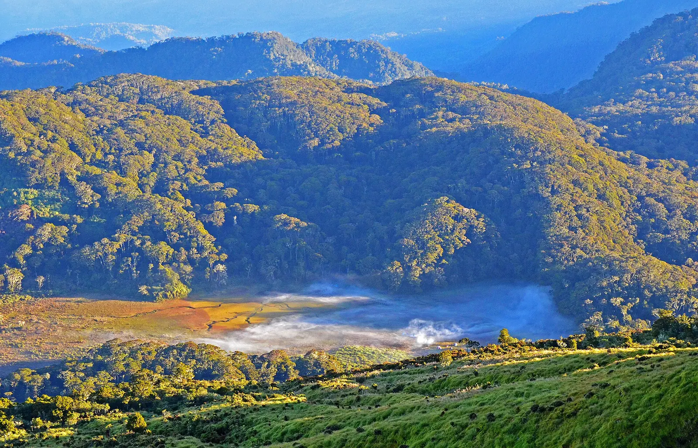
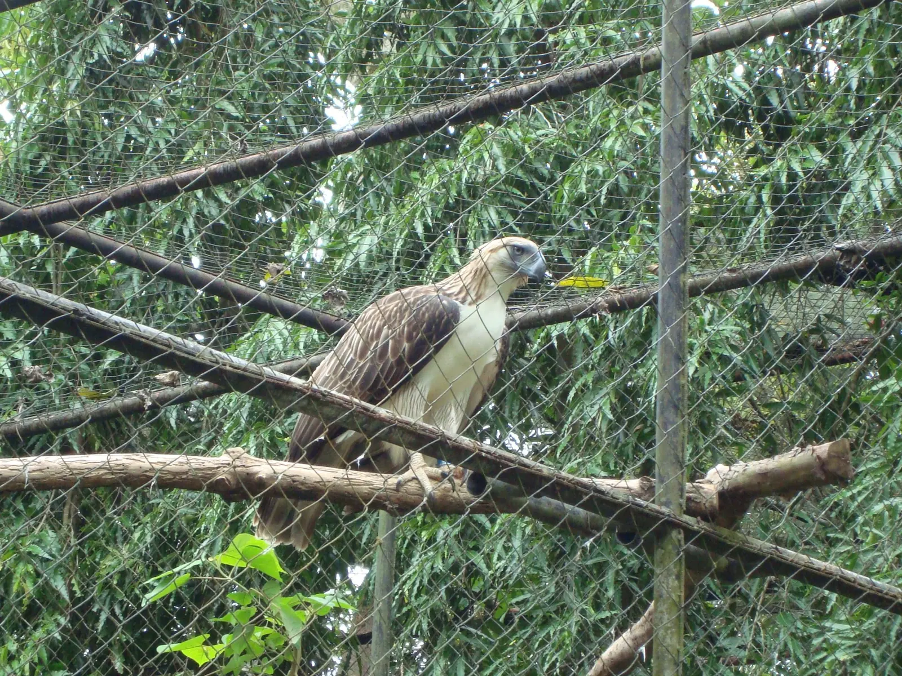
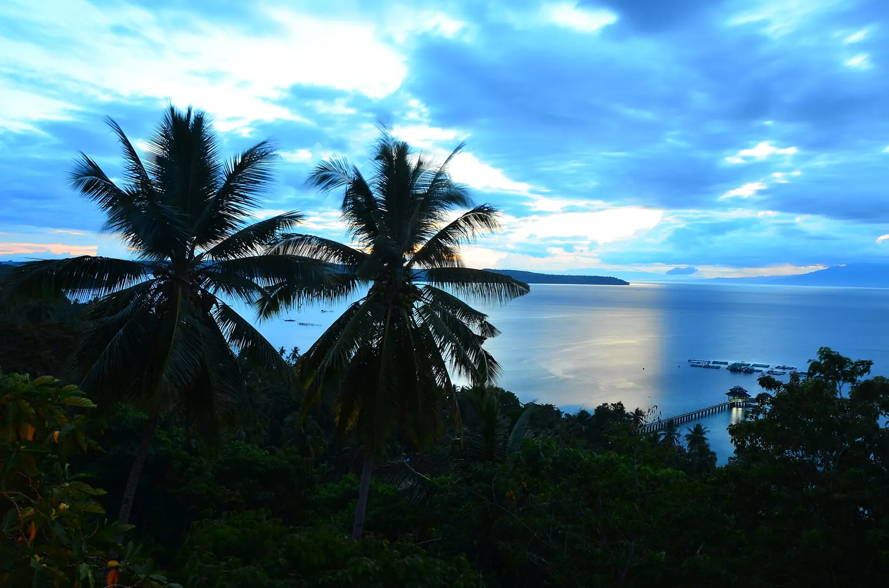
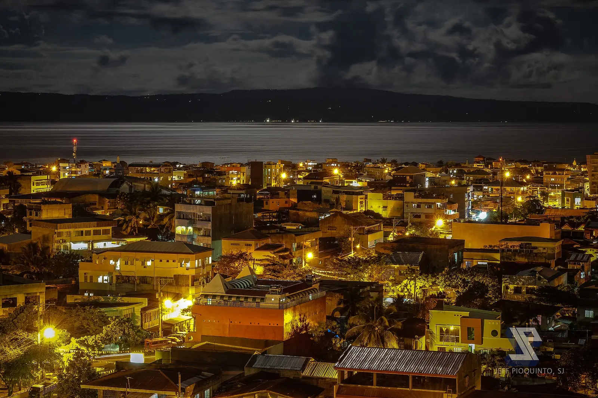
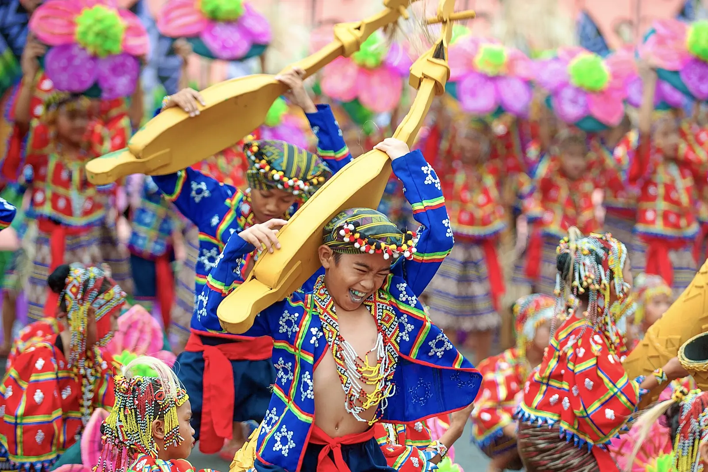
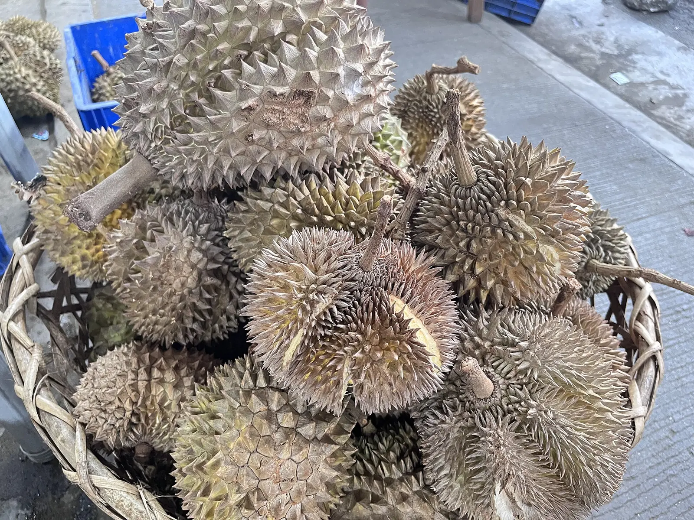

Chapter 00 — Davao City
Where the mountain meets the gulf.
From the steaming summit of Mount Apo to the coves of Samal, cross the Philippines' great southern city as the day burns down to city light.
The grandfather mountain
Apo, roof of the Philippines.
At 2,954 metres, Mount Apo is the highest peak in the country — a dormant volcano whose sulfur vents still steam above the cloud forest. The Lumad peoples who live on its slopes call it Apo Sandawa: the elder, the grandfather.

King of birds
The haribon keeps watch.
The Philippine eagle is one of the largest eagles on Earth, and it lives nowhere but these islands. At the Philippine Eagle Center in Malagos, on Davao's forested edge, the national bird is bred, studied and returned to the wild.

Island Garden City
Across the water, Samal.
East of the city, Davao Gulf opens toward the Pacific. A short boat ride across lies Samal — ringed by white-sand coves, coral gardens and coconut groves, and close enough to watch the city lights come on.


A festival of thanks
Kadayawan, the city gives thanks.
Every August the streets fill with dance, beadwork and the harvest. Kadayawan — from madayaw, "good, beautiful" — honours the tribes of Davao and the fruit the city is famous for: durian, the king of fruits.


Chapter 05 — Afterglow
Madayaw.
Come for the mountain. Stay for the gulf at night, when the whole shore turns to lantern light.